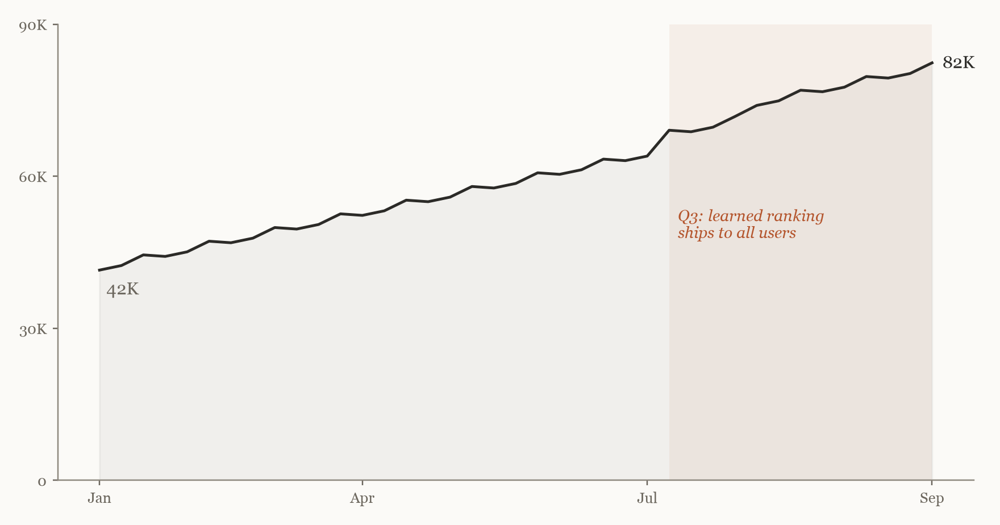

Northwind Notes · Quarterly reviewGallery 3 · Q3 2026
Finding, not searching
Nine months of work on search, in three rooms.
January–September 2026 · Illustrative data
IGrowth
Weekly searchers nearly doubled

Weekly searchers, 2026
Line chart, rolling seven-day count of people who ran at least one search
82K from 42K
The steepest gain followed learned ranking in July.
ACC. Q3.2026.01
IIQuality
Better answers, faster
First result opened
Share of searches where the top result was the one people opened
58% from 47%
ACC. Q3.2026.02
Searches with no result
Share of searches that returned nothing
6% from 14%
ACC. Q3.2026.03
Time to first result
95th percentile, in seconds
0.18s from 1.4s
ACC. Q3.2026.04
IIICurator's note
Why it worked
Growth followed quality. People searched more once the first result was usually the right one.
The new index made search fast enough to trust. Learned ranking then put the note people meant at the top, so fewer searches ended empty and more ended on the first click. Usage rose most in the weeks after each of these shipped.
Notes by the Search team
IVComing next
Next quarter's acquisitions
- Q4 2026Search inside attachments: PDFs and images.
- Q4 2026Offline search on mobile.
- Q1 2027Shared team notebooks in results.